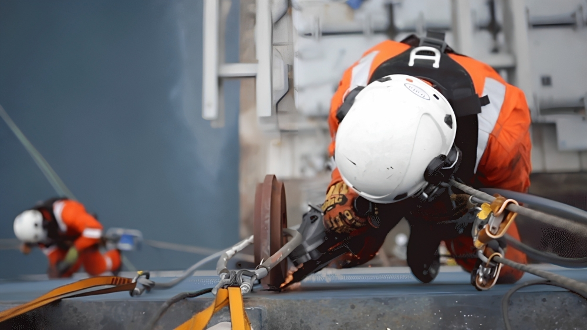
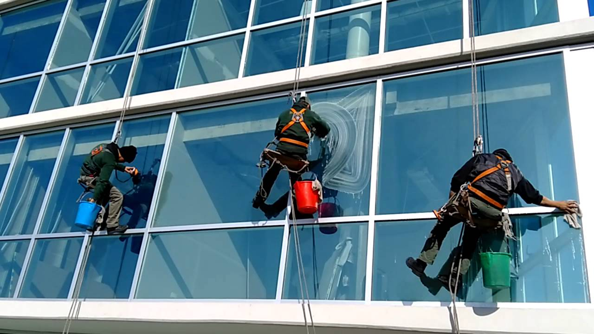
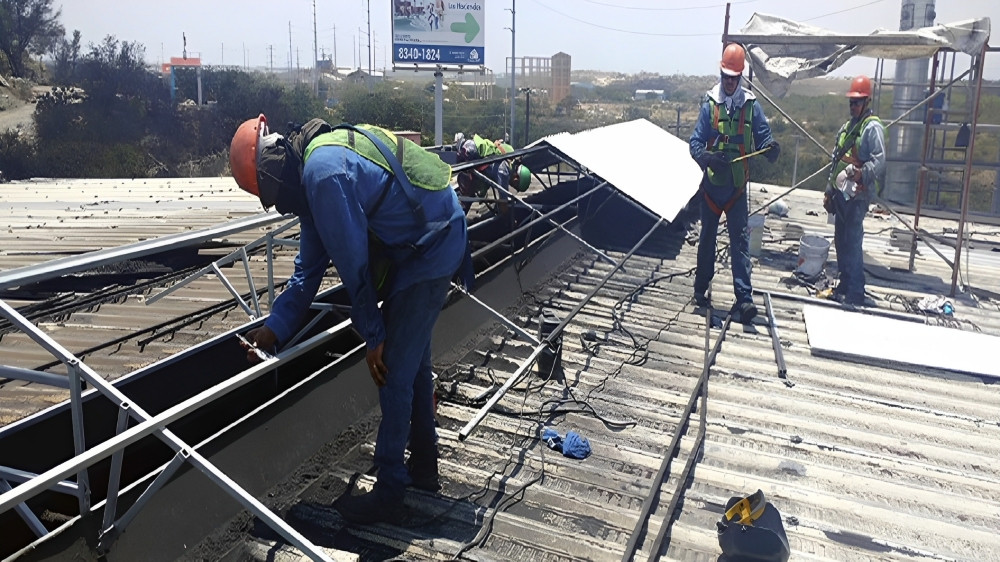
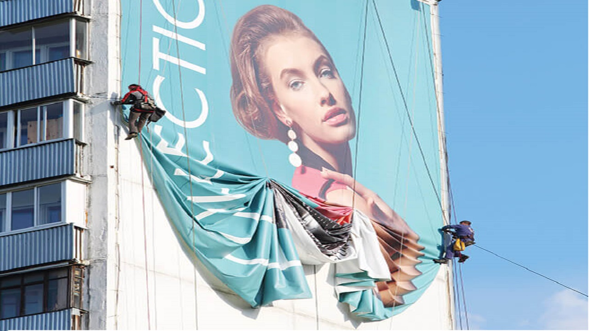
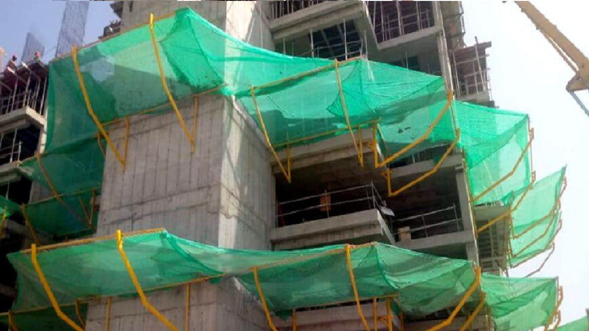

Nuestro enfoque se basa en garantizar la satisfacción del cliente al cumplir con los plazos acordados para la entrega del servicio. Esto implica una planificación eficiente, asignación adecuada de recursos y seguimiento riguroso de los tiempos establecidos. Nuestro objetivo es que nuestros clientes confíen en que cumpliremos con las fechas acordadas, evitando demoras innecesarias y asegurando su satisfacción.
Trabajos Verticales
son la solución eficiente y segura para acceder a alturas y áreas de difícil acceso, permitiendo realizar tareas de limpieza, mantenimiento e instalación con precisión y calidad."
Limpieza y mantenimiento en altura:
Este servicio se enfoca en el mantenimiento y limpieza de fachadas y estructuras en alturas. Es ideal para edificios, torres, puentes u otras estructuras donde se requiere acceso vertical para realizar tareas de limpieza, pintura, reparaciones y mantenimiento en general.

Pintado de fachada:
Ofrecemos servicios de pintura de fachadas utilizando técnicas y equipos especializados en trabajos verticales. Nuestro equipo capacitado se encarga de preparar la superficie, elegir la pintura adecuada y aplicarla con precisión para mejorar la apariencia y protección de las fachadas de los edificios.

Lavado de lunas:
Esta actividad implica la limpieza de ventanas, vidrios y cristales en áreas de difícil acceso. Nuestros trabjadores utilizan técnicas y equipos especializados para garantizar una limpieza eficiente y segura de las superficies acristaladas.
Techos y canaletas:
Nos encargamos del mantenimiento y limpieza de techos y canaletas. Esto implica eliminar hojas, suciedad, residuos y obstrucciones de las canaletas, así como llevar a cabo reparaciones y tratamientos de impermeabilización en los techos.

Instalación de banners
publicitarios:
Nos encargamos de colocar anuncios o pancartas en lugares estratégicos, utilizando técnicas de trabajos verticales para llegar a alturas y ubicaciones específicas donde se desea exhibir el banner.


Estructuras para soporte de mallas anticaídas:
Este servicio consiste en la instalación de estructuras metálicas o sistemas de soporte para mallas anticaídas. Estas mallas se utilizan como medida de seguridad para evitar caídas desde alturas y se instalan en obras de construcción, edificios en rehabilitación u otras estructuras similares.